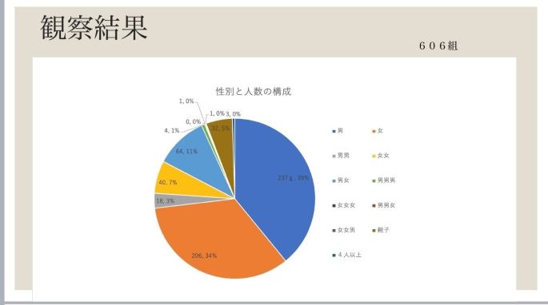

観察の題材と内容
１班 テーマ・・・住
- markis周辺のショッピングセンター付近に来ている人の人数構成を調査する。
①調べる内容
- 何人で来ているか
- 来ている人の構成（家族、友人、カップル等）
- どのような人か（高校生、社会人等）
- 年齢
- ※２，３，４つめは今回インタビューが出来ないため、見た目で判断する。
②準備する物
③観察前の考察
- ショッピングセンター前なので若者が多いのではないか。
- 下校時間なので学生が多いのではないか。(観察時間：14:00~15:10)
④結果


- 一番多かった人数構成は一人だった。男女別で見てみても一人で来ている人が多かった。また、ペットの散歩も多く見られた。
- 次に多かったのは２人で来ている人だった。
- ふたりできているひとは男女で来ている人が多かった。これは学生の下校のカップルや、老夫婦の散歩が多かった。
- ３人以上出来ている人は少なかった。
- 親子で来ている人も多く見られた。
④結果を踏まえての考察
- ２人以上が少ない理由として、ショッピングセンターが近いため１人で来ている人が多いのではないか。
- 学生や若者が多いと思っていたが、高齢者が多かったのは学生は部活などの放課後活動でまだ下校時間ではなかったのではないか。
- 高齢者や親子連れが多かったので、ここは散歩などに適している場所なのではないか。
- 会社が周りに多いため、その移動でここの道を通るので一人の人が多く見られたのではないか。
- ※調査には関係ないが、半袖短パンの小学生が多くいた。寒そうだった。
デザイン演習トップページ
XBPトップページ